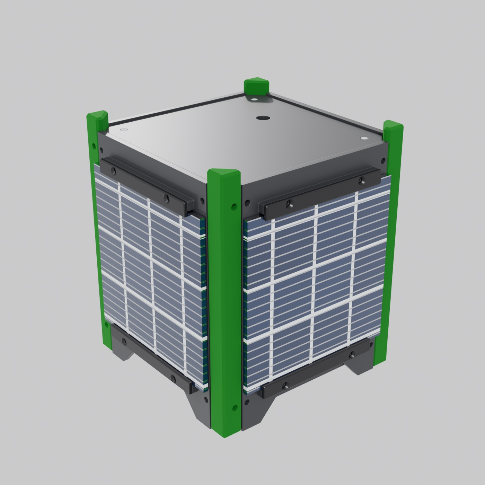

Eleven orders for one satellite.

Samruk-1, the atmospheric probe I designed this autumn.
This autumn I designed the electronics for Samruk-1, a small atmospheric probe: four boards in KiCad, the power system and the firmware. I used AI models as assistants for some of the work — and wrote my own scripts to check every suggestion they made.
I placed eleven board orders. Seven of them were cancelled and replaced as the design kept changing. Every check I had said whether a rule was broken — none of them said what the multimeter would read.
That gap is about to get much bigger: AI is starting to design whole boards. Proofboard is the tool I wanted then — a prediction you can trust before you pay for the board, and an honest score of how good that prediction was.
Ramil Murat · high-school student, Astana, Kazakhstan
Anyone who needs to trust a board before paying for it.
AI labs
An independent exam for hardware design, scored by instruments rather than by rules.
AI-for-PCB tools
Third-party evidence of first-pass success to show customers.
Hardware teams
A prediction of how a board will perform, before two weeks and a fabrication order are spent.
I'm looking for people to build this with.
If any of this is you, write to me on LinkedIn — Ramil Murat. Code is available to partners on request.
- A mentor in power electronics
- Teams building or evaluating AI tools for PCB design
- Labs or schools with bench equipment to share